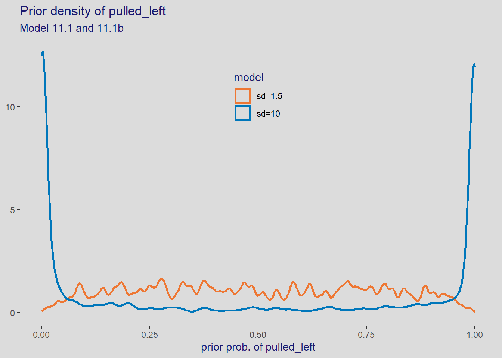

theme_set(
ggthemes::theme_tufte(base_size = 11, base_family = "sans", ticks = TRUE) +
theme(title = element_text(color = "midnightblue"),
panel.grid.major = element_blank(),
panel.grid.minor = element_blank(),
plot.background = element_rect(fill = "gainsboro", color = NA),
strip.background = element_rect(fill = "wheat", color = NA)))11 Counting and Classification
We set the current theme used for plotting
11.1 Binomial regression
11.1.1 Logistic regression: Prosocial chimpanzees
Load the data
data(chimpanzees)
dataChimp <- chimpanzees %>%
mutate(actor = factor(actor),
treatment = factor(1 + prosoc_left + 2 * condition, levels = 1:4,
labels = c("AR", "AL", "PR", "PL")))
rm(chimpanzees)
skimr::skim(dataChimp)| Name | dataChimp |
| Number of rows | 504 |
| Number of columns | 9 |
| _______________________ | |
| Column type frequency: | |
| factor | 2 |
| numeric | 7 |
| ________________________ | |
| Group variables | None |
Variable type: factor
| skim_variable | n_missing | complete_rate | ordered | n_unique | top_counts |
|---|---|---|---|---|---|
| actor | 0 | 1 | FALSE | 7 | 1: 72, 2: 72, 3: 72, 4: 72 |
| treatment | 0 | 1 | FALSE | 4 | AR: 126, AL: 126, PR: 126, PL: 126 |
Variable type: numeric
| skim_variable | n_missing | complete_rate | mean | sd | p0 | p25 | p50 | p75 | p100 | hist |
|---|---|---|---|---|---|---|---|---|---|---|
| recipient | 252 | 0.5 | 5.00 | 2.00 | 2 | 3.00 | 5.0 | 7.00 | 8 | ▇▃▃▃▇ |
| condition | 0 | 1.0 | 0.50 | 0.50 | 0 | 0.00 | 0.5 | 1.00 | 1 | ▇▁▁▁▇ |
| block | 0 | 1.0 | 3.50 | 1.71 | 1 | 2.00 | 3.5 | 5.00 | 6 | ▇▃▃▃▃ |
| trial | 0 | 1.0 | 36.50 | 20.80 | 1 | 18.75 | 36.5 | 54.25 | 72 | ▇▇▇▇▇ |
| prosoc_left | 0 | 1.0 | 0.50 | 0.50 | 0 | 0.00 | 0.5 | 1.00 | 1 | ▇▁▁▁▇ |
| chose_prosoc | 0 | 1.0 | 0.57 | 0.50 | 0 | 0.00 | 1.0 | 1.00 | 1 | ▆▁▁▁▇ |
| pulled_left | 0 | 1.0 | 0.58 | 0.49 | 0 | 0.00 | 1.0 | 1.00 | 1 | ▆▁▁▁▇ |
We have added the variable treatment that is a code for prosoc_left and condition variables with the following meanings
dataChimp %>%
distinct(prosoc_left, condition, treatment) %>%
mutate(description = c("Alone and two food items on the right",
"Alone and two food items on the left",
"Partner and two food items on the right",
"Partner and two food items on the left")) condition prosoc_left treatment description
1 0 0 AR Alone and two food items on the right
2 0 1 AL Alone and two food items on the left
3 1 0 PR Partner and two food items on the right
4 1 1 PL Partner and two food items on the leftThe model used will
\[ \begin{align*} pulled\_left_i &\sim \mathcal{Binomial}(1, p_i) \\ logit(p_i) &= \alpha_{actor[i]} + \beta_{treatment[i]} \\ \alpha_j &\sim \mathcal{N}(0, \omega) \\ \beta_k &\sim \mathcal{N}(0, \omega) \\ &\text{sd to be determined} \end{align*} \]
11.1.1.1 Prior for \(\alpha\)
We begin with the one-intercept only model. It refers to a general mean for all \(p_i\).
\[ \begin{align*} pulled\_left_i &\sim \mathcal{Binomial}(1, p_i) \\ logit(p_i) &= \alpha \\ \alpha &\sim \mathcal{N}(0, 10) \end{align*} \]
in brm( forml = pulled_left | trials(1) ~ 1) the | indicates we have extra information about the criterion. In this case, that information is that each pulled_left corresponds to a single trial, i.e. trials(1) which corresponds to the \(n = 1\) in \(Binomial(1, p_i)\)
We will use 2 \(\omega\) values for \(\alpha \sim \mathcal{N}(0, \omega)\).
c(10, 1.5)[1] 10.0 1.5tictoc::tic(msg = sprintf("run time of %s, use the cache.", "60 secs."))
b11.1 <- xfun::cache_rds({
out <- brm(data = dataChimp,
family = binomial,
formula = pulled_left | trials(1) ~ 1,
prior = c(
prior(normal(0, 10), class = Intercept)),
seed = 11, cores = detectCores(),
sample_prior = TRUE)
out <- brms::add_criterion(out, criterion = c("waic", "loo"))},
file = "ch11_b11_01")
tictoc::toc()run time of 60 secs., use the cache.: 0.14 sec elapsedsummary(b11.1) Family: binomial
Links: mu = logit
Formula: pulled_left | trials(1) ~ 1
Data: dataChimp (Number of observations: 504)
Draws: 4 chains, each with iter = 2000; warmup = 1000; thin = 1;
total post-warmup draws = 4000
Population-Level Effects:
Estimate Est.Error l-95% CI u-95% CI Rhat Bulk_ESS Tail_ESS
Intercept 0.32 0.09 0.14 0.50 1.00 1282 2123
Draws were sampled using sampling(NUTS). For each parameter, Bulk_ESS
and Tail_ESS are effective sample size measures, and Rhat is the potential
scale reduction factor on split chains (at convergence, Rhat = 1).and we convert the result using brms::inv_logit_scaled().
brms::inv_logit_scaled(fixef(b11.1)) Estimate Est.Error Q2.5 Q97.5
Intercept 0.5794953 0.5230559 0.5357174 0.6233687and we use another value for the prior to be able to calibrate it.
\[ \begin{align*} pulled\_left_i &\sim \mathcal{Binomial}(1, p_i) \\ logit(p_i) &= \alpha \\ \alpha &\sim \mathcal{N}(0, 1.5) \end{align*} \]
tictoc::tic(msg = sprintf("run time of %s, use the cache.", "60 secs."))
b11.1b <- xfun::cache_rds({
out <- brm(data = dataChimp,
family = binomial,
formula = pulled_left | trials(1) ~ 1,
prior = c(
prior(normal(0, 1.5), class = Intercept)
),
seed = 11, cores = detectCores(),
sample_prior = TRUE)
out <- brms::add_criterion(out, criterion = c("waic", "loo"))},
file = "ch11_b11_01b")
tictoc::toc()run time of 60 secs., use the cache.: 0.25 sec elapsedsummary(b11.1b) Family: binomial
Links: mu = logit
Formula: pulled_left | trials(1) ~ 1
Data: dataChimp (Number of observations: 504)
Draws: 4 chains, each with iter = 2000; warmup = 1000; thin = 1;
total post-warmup draws = 4000
Population-Level Effects:
Estimate Est.Error l-95% CI u-95% CI Rhat Bulk_ESS Tail_ESS
Intercept 0.32 0.09 0.15 0.49 1.00 1776 1789
Draws were sampled using sampling(NUTS). For each parameter, Bulk_ESS
and Tail_ESS are effective sample size measures, and Rhat is the potential
scale reduction factor on split chains (at convergence, Rhat = 1).brms::inv_logit_scaled(fixef(b11.1b)) Estimate Est.Error Q2.5 Q97.5
Intercept 0.5799337 0.5224345 0.5368237 0.6206111and we visualize the outcome using the prior samples
samples <- list()
samples$data1 <- data.frame(model = "sd=10",
intercept = prior_draws(b11.1))
samples$data2 <- data.frame(model = "sd=1.5",
intercept = prior_draws(b11.1b))
samples <- within(samples, {
data <- bind_rows(data1, data2) %>%
mutate(p = inv_logit_scaled(Intercept))
})
# samples$data
ggplot(samples$data, aes(x = p, color = model)) +
geom_density(linewidth = 1, alpha = 3/4, adjust = 0.1) +
scale_color_paletteer_d("khroma::vibrant") +
theme(legend.position = c(0.5, 0.8)) +
labs(title = "Prior density of pulled_left",
subtitle = "Model 11.1 and 11.1b",
x = "prior prob. of pulled_left", y = NULL)
We could also use the package simstudy to simulate the prior. This will be the favored approach in this project. The advantage of doing this are that
- it is much faster and easier to modify than running
brmrepeatedly - it avoids possible problems of convergence when using a fit
- it allows us to use a single variable such as \(treatment\) instead of creating separate prior for each when using
brms. See what Kurz (2020) has to do in its version of chapter 8. The way Kurtz did it it render thetidybayespackage less useful.
11.1.1.1.1 Prior for \(\alpha\) with simstudy
Using simstudy is actually pretty simple avoid having to run the fit which could have convergence issues and is certainly more time-consuming.
1 + prosoc_left + 2 * condition
set.seed(as.integer(as.Date("2021-11-24")))
sim <- list(n = 4000)
sim <- within(sim, {
defs <- defData(varname = "prosoc_left", dist = "binary", formula = 0.5)
defs <- defData(defs, varname = "condition", dist = "binary", formula = 0.5)
defs <- defData(defs, varname = "treat", dist = "nonrandom",
formula = "1 + prosoc_left + 2 * condition")
defs <- defData(defs, varname = "a", dist = "normal", formula = 0, variance = 10^2)
defs <- defData(defs, varname = "pulled_left", dist = "binary", formula = "a",
link = "logit")
data1 <- genData(n = n, dtDefs = defs)
defs <- updateDef(defs, changevar = "a", newvariance = 1.5^2)
data2 <- genData(n = n, dtDefs = defs)
})
# glimpse(sim$data1)
p <- list()
p$df <- rbind(data.frame(sim$data1, "model" = "sd = 10"),
data.frame(sim$data2, "model" = "sd = 1.5")) %>%
mutate(p = gtools::inv.logit(a))
# glimpse(p$df)
ggplot(p$df, aes(x = p, color = model)) +
geom_density(size = 1, alpha = 3/4, adjust = 0.1) +
scale_color_paletteer_d("khroma::vibrant") +
theme(legend.position = c(0.5, 0.8)) +
labs(title = "Prior density of pulled_left",
subtitle = "Simulation with simstudy",
x = "prior prob. of pulled_left", y = NULL)Warning: Using `size` aesthetic for lines was deprecated in ggplot2 3.4.0.
ℹ Please use `linewidth` instead.
11.1.1.2 Prior for \(\beta_{treatment[i]}\)
Now we find the sd value for the prior \(\beta_k &\sim \mathcal{N}(0, sd)\). Note that Solomon Kurtz in Kurz (2020) uses inv_logit_scaled() whereas mcElreath in McElreath (2020) uses inv_logit().
Important: In practice we could use the same prior as for \(\alpha\) just above. In this case however we combine the impact of \(\alpha\) and \(\beta\) to illustrate the weirdness of flat priors. Comment from MacElreath at the end of p. 328.
\[ \begin{align*} pulled\_left_i &\sim \mathcal{Binomial}(1, p_i) \\ logit(p_i) &= \alpha + \beta_{treatment[i]} \\ \alpha &\sim \mathcal{N}(0, 1.5) \\ \beta_k &\sim \mathcal{N}(0, sd) \\ &\text{sd to be determined} \end{align*} \]
We get the fit with \(sd = 10\)
tictoc::tic(msg = sprintf("run time of %s, use the cache.", "95 secs."))
b11.2 <- xfun::cache_rds({
out <- brm(data = dataChimp,
family = binomial,
formula = bf(pulled_left | trials(1) ~ a + b,
a ~ 1,
b ~ 0 + treatment,
nl = TRUE),
prior = c(
prior(normal(0, 1.5), nlpar = a),
prior(normal(0, 10), nlpar = b, coef = treatmentAR),
prior(normal(0, 10), nlpar = b, coef = treatmentAL),
prior(normal(0, 10), nlpar = b, coef = treatmentPR),
prior(normal(0, 10), nlpar = b, coef = treatmentPL)
),
sample_prior = TRUE,
cores = detectCores(), seed = 11)
out <- brms::add_criterion(out, criterion = c("waic", "loo"))
}, file = "ch11_b11_02")
tictoc::toc()run time of 95 secs., use the cache.: 0.17 sec elapsedsummary(b11.2) Family: binomial
Links: mu = logit
Formula: pulled_left | trials(1) ~ a + b
a ~ 1
b ~ 0 + treatment
Data: dataChimp (Number of observations: 504)
Draws: 4 chains, each with iter = 2000; warmup = 1000; thin = 1;
total post-warmup draws = 4000
Population-Level Effects:
Estimate Est.Error l-95% CI u-95% CI Rhat Bulk_ESS Tail_ESS
a_Intercept 0.10 1.39 -2.61 2.67 1.02 327 329
b_treatmentAR 0.10 1.40 -2.47 2.86 1.02 332 341
b_treatmentAL 0.57 1.40 -2.01 3.30 1.02 335 363
b_treatmentPR -0.19 1.40 -2.70 2.53 1.02 334 327
b_treatmentPL 0.46 1.40 -2.15 3.19 1.02 330 324
Draws were sampled using sampling(NUTS). For each parameter, Bulk_ESS
and Tail_ESS are effective sample size measures, and Rhat is the potential
scale reduction factor on split chains (at convergence, Rhat = 1).brms::inv_logit_scaled(fixef(b11.2)) Estimate Est.Error Q2.5 Q97.5
a_Intercept 0.5241256 0.8005349 0.06829523 0.9355080
b_treatmentAR 0.5237826 0.8019730 0.07817849 0.9457296
b_treatmentAL 0.6377211 0.8017358 0.11817736 0.9645810
b_treatmentPR 0.4533016 0.8016250 0.06285691 0.9263353
b_treatmentPL 0.6138719 0.8023404 0.10442971 0.9604019then the fit with \(sd = 0.5\)
tictoc::tic(msg = sprintf("run time of %s, use the cache.", "95 secs."))
b11.3 <- xfun::cache_rds({
out <- brm(data = dataChimp,
family = binomial,
formula = bf(pulled_left | trials(1) ~ a + b,
a ~ 1,
b ~ 0 + treatment,
nl = TRUE),
prior = c(
prior(normal(0, 1.5), nlpar = a),
prior(normal(0, 0.5), nlpar = b, coef = treatmentAR),
prior(normal(0, 0.5), nlpar = b, coef = treatmentAL),
prior(normal(0, 0.5), nlpar = b, coef = treatmentPR),
prior(normal(0, 0.5), nlpar = b, coef = treatmentPL)
),
sample_prior = TRUE,
cores = detectCores(), seed = 11)
out <- brms::add_criterion(out, criterion = c("waic", "loo"))},
file = "ch11_b11_03")
tictoc::toc()run time of 95 secs., use the cache.: 0.17 sec elapsedsummary(b11.3) Family: binomial
Links: mu = logit
Formula: pulled_left | trials(1) ~ a + b
a ~ 1
b ~ 0 + treatment
Data: dataChimp (Number of observations: 504)
Draws: 4 chains, each with iter = 2000; warmup = 1000; thin = 1;
total post-warmup draws = 4000
Population-Level Effects:
Estimate Est.Error l-95% CI u-95% CI Rhat Bulk_ESS Tail_ESS
a_Intercept 0.32 0.26 -0.18 0.81 1.00 1019 1162
b_treatmentAR -0.11 0.28 -0.66 0.42 1.00 1195 1505
b_treatmentAL 0.30 0.29 -0.24 0.86 1.00 1236 1613
b_treatmentPR -0.37 0.29 -0.93 0.19 1.00 1259 1885
b_treatmentPL 0.21 0.28 -0.34 0.77 1.00 1247 1330
Draws were sampled using sampling(NUTS). For each parameter, Bulk_ESS
and Tail_ESS are effective sample size measures, and Rhat is the potential
scale reduction factor on split chains (at convergence, Rhat = 1).brms::inv_logit_scaled(fixef(b11.3)) Estimate Est.Error Q2.5 Q97.5
a_Intercept 0.5791896 0.5642726 0.4552877 0.6922022
b_treatmentAR 0.4714931 0.5704568 0.3400566 0.6040998
b_treatmentAL 0.5753559 0.5707939 0.4392282 0.7023387
b_treatmentPR 0.4087555 0.5708594 0.2837305 0.5473915
b_treatmentPL 0.5525143 0.5706380 0.4152210 0.6829478tidybayes::get_variables(b11.2) [1] "b_a_Intercept" "b_b_treatmentAR" "b_b_treatmentAL"
[4] "b_b_treatmentPR" "b_b_treatmentPL" "prior_b_a"
[7] "prior_b_b_treatmentAR" "prior_b_b_treatmentAL" "prior_b_b_treatmentPR"
[10] "prior_b_b_treatmentPL" "lprior" "lp__"
[13] "accept_stat__" "stepsize__" "treedepth__"
[16] "n_leapfrog__" "divergent__" "energy__" samples <- list()
samples$data1 <- data.frame(model = "sd=10",
intercept = prior_draws(b11.2))
samples$data2 <- data.frame(model = "sd=0.5",
intercept = prior_draws(b11.3))
samples <- within(samples, {
data1 <- data1 %>%
mutate(p1 = inv_logit_scaled(intercept.b_a + intercept.b_b_treatmentAR),
p2 = inv_logit_scaled(intercept.b_a + intercept.b_b_treatmentAL),
p3 = inv_logit_scaled(intercept.b_a + intercept.b_b_treatmentPR),
p4 = inv_logit_scaled(intercept.b_a + intercept.b_b_treatmentPL)) %>%
mutate(diff = abs(p1 - p2))
data2 <- data2 %>%
mutate(p1 = inv_logit_scaled(intercept.b_a + intercept.b_b_treatmentAR),
p2 = inv_logit_scaled(intercept.b_a + intercept.b_b_treatmentAL),
p3 = inv_logit_scaled(intercept.b_a + intercept.b_b_treatmentPR),
p4 = inv_logit_scaled(intercept.b_a + intercept.b_b_treatmentPL)) %>%
mutate(diff = abs(p1 - p2))
data <- bind_rows(data1, data2)
})
ggplot(samples$data, aes(x = diff, color = model)) +
geom_density(size = 1, alpha = 3/4, adjust = 0.1) +
scale_color_paletteer_d("khroma::vibrant") +
theme(legend.position = c(0.5, 0.8)) +
labs(title = "Prior density of pulled_left",
subtitle = "Model 11.1 and 11.1b",
x = "prior prob. of pulled_left", y = NULL)
11.1.1.2.1 Prior for \(\beta\) with simstudy
We also simulate \(\beta\) with sinmstudy which is more versatile and easier to code (personal opinion), e.g. no need to convert with inv_logit_scaled and no need to run the model with prior_draws()
sim <- list(n = 1000)
sim <- within(sim, {
# define the model
defs <- defData(varname = "a", dist = "normal", formula = 0, variance = 1.5^2)
defs <- defData(defs, varname = "b1", dist = "normal", formula = 0, variance = "..v")
defs <- defData(defs, varname = "b2", dist = "normal", formula = 0, variance = "..v")
defs <- defData(defs, varname = "b3", dist = "normal", formula = 0, variance = "..v")
defs <- defData(defs, varname = "b4", dist = "normal", formula = 0, variance = "..v")
defs <- defData(defs, varname = "p1", dist = "nonrandom", formula = "a + b1",
link = "logit")
defs <- defData(defs, varname = "p2", dist = "nonrandom", formula = "a + b2",
link = "logit")
defs <- defData(defs, varname = "p3", dist = "nonrandom", formula = "a + b3",
link = "logit")
defs <- defData(defs, varname = "p4", dist = "nonrandom", formula = "a + b4",
link = "logit")
# generate the data
grid <- list(10, 0.5)
set.seed(as.integer(as.Date("2021-11-25")))
lst <- lapply(X = grid, FUN = function(x) {
v <- x^2
df <- genData(n = n, dtDefs = defs) %>%
as.data.frame() %>%
mutate(model = sprintf("sd=%.1f", x))
})
data <- do.call(rbind, lst) %>%
mutate(diff = abs(p1 - p2))
})
# glimpse(sim$data)
ggplot(sim$data, aes(x = diff, color = model)) +
geom_density(size = 1, alpha = 3/4, adjust = 0.1) +
scale_color_paletteer_d("khroma::vibrant") +
theme(legend.position = "none",
) +
labs(title = "Prior diff between treatments",
subtitle = "Simulation with simstudy",
x = "prior diff between treatments", y = NULL)
11.1.1.3 The full model
Now that we have investigated the prior, let’s do the full model with them
\[ \begin{align*} pulled\_left_i &\sim \mathcal{Binomial}(1, p_i) \\ logit(p_i) &= \alpha_{actor[i]} + \beta_{treatment[i]} \\ \alpha_j &\sim \mathcal{N}(0, 1.5) \\ \beta_k &\sim \mathcal{N}(0, 0.5) \end{align*} \]
We use brms::brm() in aslightly different way than Kurz (2020). Kurtz create distinct priors for every category of treatment. This is justified by his desire to get the prior data in a separate column for every prior. We don’t need to do this when using simstudy to evaluate the priors. One huge advantage when doing it this way is that we can now use the full power of tidybayes which makes the visualization of indexed parameters much easier.
tictoc::tic(msg = sprintf("run time of %s, use the cache.", "120 secs."))
b11.4 <- xfun::cache_rds({
out <- brm(data = dataChimp,
family = binomial,
formula = bf(pulled_left | trials(1) ~ a + b,
a ~ 0 + actor,
b ~ 0 + treatment,
nl = TRUE),
prior = c(
prior(normal(0, 1.5), nlpar = a),
prior(normal(0, 0.5), nlpar = b)),
cores = detectCores(), seed = 11)
out <- brms::add_criterion(out, criterion = c("waic", "loo"))},
file = "ch11_b11_04")
tictoc::toc()run time of 120 secs., use the cache.: 0.22 sec elapsedsummary(b11.4) Family: binomial
Links: mu = logit
Formula: pulled_left | trials(1) ~ a + b
a ~ 0 + actor
b ~ 0 + treatment
Data: dataChimp (Number of observations: 504)
Draws: 4 chains, each with iter = 2000; warmup = 1000; thin = 1;
total post-warmup draws = 4000
Population-Level Effects:
Estimate Est.Error l-95% CI u-95% CI Rhat Bulk_ESS Tail_ESS
a_actor1 -0.46 0.33 -1.11 0.18 1.00 1438 2165
a_actor2 3.90 0.76 2.57 5.51 1.00 3933 2607
a_actor3 -0.76 0.34 -1.42 -0.10 1.00 1387 2233
a_actor4 -0.76 0.33 -1.41 -0.10 1.00 1417 1858
a_actor5 -0.46 0.34 -1.13 0.20 1.00 1407 2312
a_actor6 0.47 0.33 -0.18 1.13 1.00 1478 2429
a_actor7 1.94 0.42 1.11 2.79 1.00 2139 2812
b_treatmentAR -0.03 0.29 -0.59 0.53 1.00 1362 2538
b_treatmentAL 0.49 0.29 -0.07 1.05 1.00 1292 2260
b_treatmentPR -0.38 0.29 -0.94 0.21 1.00 1267 2071
b_treatmentPL 0.38 0.29 -0.17 0.96 1.00 1314 2186
Draws were sampled using sampling(NUTS). For each parameter, Bulk_ESS
and Tail_ESS are effective sample size measures, and Rhat is the potential
scale reduction factor on split chains (at convergence, Rhat = 1).and to obtain the coefficients on the logit scale
samples <- list()
samples$newdata <- dataChimp %>%
expand(actor, treatment)
samples$data <- as_draws(b11.4, newdata = samples$newdata) %>%
as_draws_df()
# glimpse(samples$data)
samples$stats <- samples$data %>%
select(-c("lp__", ".chain", ".iteration", ".draw")) %>%
pivot_longer(cols = everything(), names_to = "var") %>%
mutate(var = sub(pattern = "b_a_|b_b_", replacement = "", x = var)) %>%
filter(grepl(pattern = "actor", x = var)) %>%
mutate(value = gtools::inv.logit(value)) %>%
group_by(var) %>%
ggdist::mean_qi()Warning: Dropping 'draws_df' class as required metadata was removed.# glimpse(samples$stats)
# tail(samples$stats)
p <- list()
p$actor <- samples$stats %>%
ggplot(aes(x = value, xmin = .lower, xmax = .upper, y = var)) +
geom_pointinterval(color = "darkgreen", size = 2, fatten_point = 3) +
geom_vline(xintercept = 0, color = "grey60") +
ggrepel::geom_text_repel(mapping = aes(label = round(value, 2))) +
theme(panel.grid.major.y = element_line(color = "white")) +
labs(title = "Coefficients for actors",
subtitle = "Model b11.4",
x = "probability", y = NULL)
# p$actor
# the treatment are kept on the logit scale
samples$stats <- samples$data %>%
select(-c("lp__", ".chain", ".iteration", ".draw")) %>%
pivot_longer(cols = everything(), names_to = "var") %>%
mutate(var = sub(pattern = "b_a_|b_b_", replacement = "", x = var)) %>%
filter(grepl(pattern = "treat", x = var)) %>%
mutate(var = case_when(
var == "treatment1" ~ "AR",
var == "treatment2" ~ "AL",
var == "treatment3" ~ "PR",
var == "treatment4" ~ "PL",
TRUE ~ as.character(var)
)) %>%
group_by(var) %>%
ggdist::mean_qi()Warning: Dropping 'draws_df' class as required metadata was removed.# samples$stats
p$treat <- samples$stats %>%
ggplot(., aes(x = value, xmin = .lower, xmax = .upper, y = var)) +
geom_pointinterval(color = "orange", size = 2, fatten_point = 3) +
geom_vline(xintercept = 0, color = "grey60") +
ggrepel::geom_text_repel(mapping = aes(label = round(value, 2))) +
theme(panel.grid.major.y = element_line(color = "white")) +
labs(title = "Coefficients for treatment",
subtitle = "Model b11.4",
x = "logit", y = NULL)
# p$treat
wrap_plots(p, ncol = 1) &
theme(plot.background = element_rect(color = NA))Warning: Using the `size` aesthietic with geom_segment was deprecated in ggplot2 3.4.0.
ℹ Please use the `linewidth` aesthetic instead.
to compare the models
w <- loo_compare(b11.2, b11.3, b11.4, criterion = "waic") %>%
as.data.frame() %>%
mutate(waic_diff = elpd_diff * -2,
waic_diff_se = se_diff * 2) %>%
round(digits = 1) %>%
tibble::rownames_to_column(var = "model")
print(w, simplify = FALSE) model elpd_diff se_diff elpd_waic se_elpd_waic p_waic se_p_waic waic se_waic
1 b11.4 0.0 0.0 -265.9 9.5 8.3 0.4 531.8 18.9
2 b11.3 -75.2 9.2 -341.2 4.6 3.6 0.1 682.3 9.2
3 b11.2 -75.8 9.2 -341.7 4.9 4.2 0.1 683.4 9.7
waic_diff waic_diff_se
1 0.0 0.0
2 150.5 18.4
3 151.5 18.5and the coefficient plot is
ggplot(w, aes(x = reorder(model, waic), color = model)) +
geom_pointinterval(aes(x = waic, xmin = waic - se_waic, xmax = waic + se_waic, y = model),
size = 4, fatten_point = 4) +
ggrepel::geom_text_repel(aes(x = waic, y = model, label = waic)) +
scale_color_paletteer_d("khroma::bright") +
# ggthemes::theme_hc() +
theme(legend.position = "none",
panel.grid.major.y = element_line(color = "white")) +
labs(title = "WAIC intervals by model", x = "waic", y = NULL)
11.1.2 Relative shark and absolute deer
as_draws_df(b11.4) %>%
mutate(proportional_odds = exp(b_b_treatmentAR - b_b_treatmentPR)) %>%
mean_qi(proportional_odds)# A tibble: 1 × 6
proportional_odds .lower .upper .width .point .interval
<dbl> <dbl> <dbl> <dbl> <chr> <chr>
1 1.47 0.812 2.45 0.95 mean qi On average the switch from treatment 2 to treatment 4 multiply the odds of pulling the left lever by 92%.
The risk of focusing on relative effects, such as proportional odds, is that they aren’t enough to tell enough whether a variable is important or not.
See the overthinking box in section 11.1.2, p. 337.
11.1.3 Aggregated binomial: Chimpanzees again
d.aggr <- dataChimp %>%
group_by(treatment, actor, prosoc_left, condition) %>%
summarise(left_pulls = sum(pulled_left)) %>%
ungroup()`summarise()` has grouped output by 'treatment', 'actor', 'prosoc_left'. You
can override using the `.groups` argument.# d.aggrtictoc::tic(msg = sprintf("run time of %s, use the cache.", "60 secs."))
b11.6 <- xfun::cache_rds({
out <- brms::brm(
data = d.aggr,
family = binomial,
formula = bf(left_pulls | trials(18) ~ a + b,
a ~ 0 + actor,
b ~ 0 + treatment,
nl = TRUE),
prior = c(prior(normal(0, 1.5), nlpar = a),
prior(normal(0, 0.5), nlpar = b)),
cores = detectCores(), seed = 11)
out <- brms::add_criterion(out, criterion = c("waic", "loo"))},
file = "ch11_b11_06")
tictoc::toc()run time of 60 secs., use the cache.: 0.22 sec elapsedsummary(b11.6) Family: binomial
Links: mu = logit
Formula: left_pulls | trials(18) ~ a + b
a ~ 0 + actor
b ~ 0 + treatment
Data: d.aggr (Number of observations: 28)
Draws: 4 chains, each with iter = 2000; warmup = 1000; thin = 1;
total post-warmup draws = 4000
Population-Level Effects:
Estimate Est.Error l-95% CI u-95% CI Rhat Bulk_ESS Tail_ESS
a_actor1 -0.46 0.34 -1.12 0.22 1.00 1441 1798
a_actor2 3.90 0.75 2.60 5.48 1.00 3661 2608
a_actor3 -0.75 0.33 -1.39 -0.10 1.00 1307 2204
a_actor4 -0.75 0.33 -1.41 -0.11 1.00 1408 2344
a_actor5 -0.45 0.33 -1.09 0.20 1.00 1360 2065
a_actor6 0.48 0.34 -0.18 1.13 1.00 1420 2417
a_actor7 1.96 0.43 1.15 2.84 1.00 1859 2442
b_treatmentAR -0.03 0.29 -0.61 0.53 1.00 1240 1933
b_treatmentAL 0.48 0.29 -0.09 1.05 1.00 1219 1999
b_treatmentPR -0.38 0.29 -0.93 0.18 1.00 1234 1862
b_treatmentPL 0.37 0.29 -0.20 0.94 1.00 1219 2126
Draws were sampled using sampling(NUTS). For each parameter, Bulk_ESS
and Tail_ESS are effective sample size measures, and Rhat is the potential
scale reduction factor on split chains (at convergence, Rhat = 1).brms::inv_logit_scaled(fixef(b11.6)) Estimate Est.Error Q2.5 Q97.5
a_actor1 0.3877644 0.5836120 0.2457840 0.5537251
a_actor2 0.9800710 0.6783117 0.9306911 0.9958368
a_actor3 0.3210886 0.5822633 0.2000692 0.4757600
a_actor4 0.3214530 0.5818736 0.1966800 0.4721562
a_actor5 0.3890616 0.5814540 0.2522242 0.5487998
a_actor6 0.6168693 0.5843089 0.4539532 0.7564221
a_actor7 0.8766174 0.6061940 0.7598673 0.9449329
b_treatmentAR 0.4913864 0.5713305 0.3528947 0.6294210
b_treatmentAL 0.6182285 0.5712055 0.4781860 0.7413262
b_treatmentPR 0.4055881 0.5717350 0.2824713 0.5449069
b_treatmentPL 0.5913498 0.5710462 0.4498345 0.719453411.1.4 Aggregated binomial: Graduate school admissions
In the chimpanzees example, the number of trials was fixed at 18. This is often not the case.
data(UCBadmit)
dataAdmit <- UCBadmit %>%
mutate(gid = factor(applicant.gender, levels = c("male", "female")),
case = seq_len(nrow(.)))
rm(UCBadmit)
skimr::skim(dataAdmit)| Name | dataAdmit |
| Number of rows | 12 |
| Number of columns | 7 |
| _______________________ | |
| Column type frequency: | |
| factor | 3 |
| numeric | 4 |
| ________________________ | |
| Group variables | None |
Variable type: factor
| skim_variable | n_missing | complete_rate | ordered | n_unique | top_counts |
|---|---|---|---|---|---|
| dept | 0 | 1 | FALSE | 6 | A: 2, B: 2, C: 2, D: 2 |
| applicant.gender | 0 | 1 | FALSE | 2 | fem: 6, mal: 6 |
| gid | 0 | 1 | FALSE | 2 | mal: 6, fem: 6 |
Variable type: numeric
| skim_variable | n_missing | complete_rate | mean | sd | p0 | p25 | p50 | p75 | p100 | hist |
|---|---|---|---|---|---|---|---|---|---|---|
| admit | 0 | 1 | 146.25 | 148.45 | 17 | 45.75 | 107.0 | 154.00 | 512 | ▇▅▁▁▁ |
| reject | 0 | 1 | 230.92 | 122.77 | 8 | 188.25 | 261.5 | 314.00 | 391 | ▃▂▃▇▆ |
| applications | 0 | 1 | 377.17 | 216.92 | 25 | 291.50 | 374.0 | 452.75 | 825 | ▃▆▇▃▂ |
| case | 0 | 1 | 6.50 | 3.61 | 1 | 3.75 | 6.5 | 9.25 | 12 | ▇▅▅▅▇ |
the univariate model is
\[ \begin{align*} admit_i &\sim \mathcal{Binomial}(n_i, p_i) \\ logit(p_i) &= \alpha_{gid[i]} \\ \alpha_j &\sim \mathcal{N}(0, 1.5) \end{align*} \] and we fit the model
tictoc::tic(msg = sprintf("run time of %s, use the cache.", "60 secs."))
b11.7 <- xfun::cache_rds({
out <- brm(data = dataAdmit,
family = binomial,
admit | trials(applications) ~ 0 + gid,
prior(normal(0, 1.5), class = b),
cores = detectCores(), seed = 11)
out <- brms::add_criterion(out, criterion = c("waic", "loo"))},
file = "ch11_b11_07")
tictoc::toc()run time of 60 secs., use the cache.: 0.22 sec elapsedsummary(b11.7) Family: binomial
Links: mu = logit
Formula: admit | trials(applications) ~ 0 + gid
Data: dataAdmit (Number of observations: 12)
Draws: 4 chains, each with iter = 2000; warmup = 1000; thin = 1;
total post-warmup draws = 4000
Population-Level Effects:
Estimate Est.Error l-95% CI u-95% CI Rhat Bulk_ESS Tail_ESS
gidmale -0.22 0.04 -0.30 -0.15 1.00 3223 2771
gidfemale -0.83 0.05 -0.93 -0.73 1.00 2833 2152
Draws were sampled using sampling(NUTS). For each parameter, Bulk_ESS
and Tail_ESS are effective sample size measures, and Rhat is the potential
scale reduction factor on split chains (at convergence, Rhat = 1).and we compute the contrast between male and female
as_draws_df(b11.7) %>%
mutate_variables(diff_a = b_gidmale - b_gidfemale,
diff_b = gtools::inv.logit(b_gidmale) - gtools::inv.logit(b_gidfemale)) %>%
select(diff_a, diff_b) %>%
pivot_longer(cols = everything(), names_to = "var") %>%
group_by(var) %>%
skimr::skim()Warning: Dropping 'draws_df' class as required metadata was removed.| Name | Piped data |
| Number of rows | 8000 |
| Number of columns | 2 |
| _______________________ | |
| Column type frequency: | |
| numeric | 1 |
| ________________________ | |
| Group variables | var |
Variable type: numeric
| skim_variable | var | n_missing | complete_rate | mean | sd | p0 | p25 | p50 | p75 | p100 | hist |
|---|---|---|---|---|---|---|---|---|---|---|---|
| value | diff_a | 0 | 1 | 0.61 | 0.06 | 0.38 | 0.57 | 0.61 | 0.65 | 0.86 | ▁▃▇▂▁ |
| value | diff_b | 0 | 1 | 0.14 | 0.01 | 0.09 | 0.13 | 0.14 | 0.15 | 0.20 | ▁▃▇▃▁ |
and the full model is
\[ \begin{align*} admit_i &\sim \mathcal{Binomial}(n_i, p_i) \\ logit(p_i) &= \alpha_{gid[i]} + \delta_{dept[i]} \\ \alpha_j &\sim \mathcal{N}(0, 1.5) \\ \delta_k &\sim \mathcal{N}(0, 1.5) \end{align*} \]
and we fit the model
tictoc::tic(msg = sprintf("run time of %s, use the cache.", "95 secs."))
b11.8 <- xfun::cache_rds({
out <- brm(data = dataAdmit,
family = binomial,
bf(admit | trials(applications) ~ a + d,
a ~ 0 + gid,
d ~ 0 + dept,
nl = TRUE),
prior = c(prior(normal(0, 1.5), nlpar = a),
prior(normal(0, 1.5), nlpar = d)),
iter = 4000, warmup = 1000, cores = detectCores(), seed = 11)
out <- brms::add_criterion(out, criterion = c("waic", "loo"))},
file = "ch11_b11_08")
tictoc::toc()run time of 95 secs., use the cache.: 0.31 sec elapsedbrms::inv_logit_scaled(fixef(b11.8)) Estimate Est.Error Q2.5 Q97.5
a_gidmale 0.3707274 0.6300849 0.17441500 0.6216005
a_gidfemale 0.3938726 0.6298151 0.18940605 0.6422729
d_deptA 0.7520798 0.6307086 0.52208126 0.8941584
d_deptB 0.7436556 0.6313284 0.50534949 0.8912782
d_deptC 0.4622289 0.6305185 0.23618164 0.7058461
d_deptD 0.4544558 0.6304364 0.23231958 0.6986472
d_deptE 0.3482556 0.6311436 0.15921859 0.5999073
d_deptF 0.1014941 0.6338615 0.03732956 0.2442788summary(b11.8) Family: binomial
Links: mu = logit
Formula: admit | trials(applications) ~ a + d
a ~ 0 + gid
d ~ 0 + dept
Data: dataAdmit (Number of observations: 12)
Draws: 4 chains, each with iter = 4000; warmup = 1000; thin = 1;
total post-warmup draws = 12000
Population-Level Effects:
Estimate Est.Error l-95% CI u-95% CI Rhat Bulk_ESS Tail_ESS
a_gidmale -0.53 0.53 -1.55 0.50 1.01 882 951
a_gidfemale -0.43 0.53 -1.45 0.59 1.01 868 937
d_deptA 1.11 0.54 0.09 2.13 1.01 894 974
d_deptB 1.07 0.54 0.02 2.10 1.01 906 999
d_deptC -0.15 0.53 -1.17 0.88 1.01 879 965
d_deptD -0.18 0.53 -1.20 0.84 1.01 881 972
d_deptE -0.63 0.54 -1.66 0.41 1.01 882 957
d_deptF -2.18 0.55 -3.25 -1.13 1.01 896 1005
Draws were sampled using sampling(NUTS). For each parameter, Bulk_ESS
and Tail_ESS are effective sample size measures, and Rhat is the potential
scale reduction factor on split chains (at convergence, Rhat = 1).and again we compute the contrast between male and female
as_draws_df(b11.8) %>%
mutate_variables(diff_a = b_a_gidmale - b_a_gidfemale,
diff_b = gtools::inv.logit(b_a_gidmale) - gtools::inv.logit(b_a_gidfemale)) %>%
select(diff_a, diff_b) %>%
pivot_longer(cols = everything(), names_to = "var") %>%
group_by(var) %>%
skimr::skim()Warning: Dropping 'draws_df' class as required metadata was removed.| Name | Piped data |
| Number of rows | 24000 |
| Number of columns | 2 |
| _______________________ | |
| Column type frequency: | |
| numeric | 1 |
| ________________________ | |
| Group variables | var |
Variable type: numeric
| skim_variable | var | n_missing | complete_rate | mean | sd | p0 | p25 | p50 | p75 | p100 | hist |
|---|---|---|---|---|---|---|---|---|---|---|---|
| value | diff_a | 0 | 1 | -0.10 | 0.08 | -0.43 | -0.15 | -0.10 | -0.04 | 0.21 | ▁▂▇▃▁ |
| value | diff_b | 0 | 1 | -0.02 | 0.02 | -0.11 | -0.03 | -0.02 | -0.01 | 0.05 | ▁▂▇▃▁ |
11.2 Poisson regression
\[ \begin{align*} y_i &\sim \mathcal{Poisson}(\lambda_i) \\ \log{\lambda_i} &= \alpha + \beta (x_i - \bar{x}) \end{align*} \]
11.2.1 Example: Oceanic tool complexity
data(Kline)
dataKline <- Kline %>%
mutate(log_pop = log(population),
log_pop_s = as.vector(scale(log_pop)),
cid = factor(contact, levels = c("low", "high")))
rm(Kline)
skimr::skim(dataKline)| Name | dataKline |
| Number of rows | 10 |
| Number of columns | 8 |
| _______________________ | |
| Column type frequency: | |
| factor | 3 |
| numeric | 5 |
| ________________________ | |
| Group variables | None |
Variable type: factor
| skim_variable | n_missing | complete_rate | ordered | n_unique | top_counts |
|---|---|---|---|---|---|
| culture | 0 | 1 | FALSE | 10 | Chu: 1, Haw: 1, Lau: 1, Mal: 1 |
| contact | 0 | 1 | FALSE | 2 | hig: 5, low: 5 |
| cid | 0 | 1 | FALSE | 2 | low: 5, hig: 5 |
Variable type: numeric
| skim_variable | n_missing | complete_rate | mean | sd | p0 | p25 | p50 | p75 | p100 | hist |
|---|---|---|---|---|---|---|---|---|---|---|
| population | 0 | 1 | 34109.10 | 84793.03 | 1100.00 | 3897.75 | 7700.00 | 12050.00 | 275000.00 | ▇▁▁▁▁ |
| total_tools | 0 | 1 | 34.80 | 17.85 | 13.00 | 22.50 | 30.50 | 42.25 | 71.00 | ▇▃▃▂▂ |
| mean_TU | 0 | 1 | 4.83 | 1.14 | 3.20 | 4.00 | 4.85 | 5.30 | 6.60 | ▅▅▇▂▅ |
| log_pop | 0 | 1 | 8.98 | 1.53 | 7.00 | 8.26 | 8.95 | 9.39 | 12.52 | ▃▇▃▁▂ |
| log_pop_s | 0 | 1 | 0.00 | 1.00 | -1.29 | -0.47 | -0.02 | 0.27 | 2.32 | ▃▇▃▁▂ |
the model is
\[ total\_tools_i \sim \mathcal{Poisson}(\lambda_i) \\ \log{\lambda_i} = \alpha_{cid[i]} + \beta_{cid[i]} \log{log\_pop\_s_i} \\ \alpha_j \sim \mathcal{N}(0, ?) \\ \beta_k \sim \mathcal{N}(0, ?) \]
11.2.1.1 Calibrating the priors
Source: https://ggplot2.tidyverse.org/reference/geom_function.html
For the intercept \(\alpha_j\). If \(\alpha_j\) is normal then we know that \(\lambda_j\) is lognormal distributed.
11.2.1.1.1 With simstudy
sim <- list(nsamples = 100)
sim <- within(sim, {
# define the model
defs <- defData(varname = "a", dist = "normal", formula = "..m",
variance = "..v")
defs <- defData(defs, varname = "lambda", dist = "nonrandom",
formula = "a", link = "log")
# generate data using the grid f specs
grid <- expand.grid(mean = c(0, 1, 3),
sd = c(0.5, 1, 2)) %>%
mutate(model = sprintf("m=%.1f, s=%.1f", mean, sd))
lst <- lapply(seq_len(nrow(grid)), FUN = function(i) {
m <- grid$mean[i]
s <- grid$sd[i]
v <- s^2
set.seed(as.integer(as.Date("2021-12-09")))
genData(n = nsamples, dtDefs = defs) %>%
as.data.frame() %>%
mutate(mean = m, sd = s, model = grid$model[i])
})
names(lst) <- grid$model
data <- do.call(rbind, lst)
})
# glimpse(sim$data)
p$plot <- ggplot(sim$data, aes(x = lambda, fill = as.factor(mean), color = as.factor(mean))) +
geom_density(aes(y = ..scaled..)) +
scale_fill_paletteer_d("khroma::vibrant") +
scale_color_paletteer_d("khroma::vibrant") +
coord_cartesian(xlim = c(0, 100)) +
theme(legend.position = "none",
axis.text.y = element_blank(),
axis.ticks.y = element_blank()) +
labs(title = "Prior predictive distribution of the mean (lambda)",
x = NULL, y = NULL) +
facet_grid(sprintf("sd of a=%.1f", sd) ~ sprintf("mean of a=%.1f", mean))
p$plotWarning: The dot-dot notation (`..scaled..`) was deprecated in ggplot2 3.4.0.
ℹ Please use `after_stat(scaled)` instead.
11.2.1.1.2 as per textbook
p <- list()
# p$specs <- expand.grid("x"= c(0, 100), "meanlog" = c(0, 3, 5), "sdlog" = c(0.5, 5, 10)) %>%
# mutate(prior = paste0("meanlog=", meanlog, ", ", "sdlog=", sdlog))
# p$specs
p$df <- crossing("meanlog" = c(0, 2, 3), "sdlog" = c(0.5, 1, 2)) %>%
expand(nesting(meanlog, sdlog), x = seq(from = 0, to = 100, length.out = 50)) %>%
mutate(density = dlnorm(x, meanlog = meanlog, sdlog = sdlog),
meanid = factor(paste("meanlog =", meanlog)),
sdid = factor(paste("sdlog =", sdlog))) %>%
arrange(meanlog, sdlog)
p$plot <- ggplot(p$df, aes(x = x, y = density, fill = meanid)) +
geom_area() +
scale_y_continuous(breaks = NULL) +
scale_fill_paletteer_d("khroma::vibrant") +
coord_cartesian(xlim = c(0, 50)) +
theme(legend.position = "none",
axis.text.y = element_blank()) +
labs(title = "Prior predictive distribution of the mean (lambda)",
x = NULL, y = NULL) +
facet_grid(sdid ~ meanid, scales = "free_y")
p$plot
Therefore we choose \(\alpha_{cid[i]} \sim \mathcal{LogNormal(3, 0.5)}\) as our prior for \(\alpha_{cid[i]}\).
Using our prior for \(\alpha_{cid[i]}\) wwe simulate \(\beta_{cid[i]}\). We show the simulation on the natural scale as it is much easier to understand
11.2.1.1.3 slope with simstudy
sim <- list(nsamples = 100, # same as mcElreath
npreds = 100) # same as McElreath
sim <- within(sim, {
# define the model
defs <- defData(varname = "a", dist = "normal", formula = 3,
variance = 0.5^2)
defs <- defData(defs, varname = "b", dist = "normal",
formula = "..m", variance = "..v")
# generate data using the grid f specs
grid <- expand.grid(mean = 0,
sd = seq(from = 0.1, to = 0.6, by = 0.1)) %>%
mutate(model = sprintf("m=%.1f, s=%.1f", mean, sd))
# create sim with standardized log
lst_log_s <- lapply(seq_len(nrow(grid)), FUN = function(i) {
set.seed(10) # same seed as McElreath
m <- grid$mean[i]
s <- grid$sd[i]
v <- s^2
genData(n = nsamples, dtDefs = defs) %>%
as.data.frame() %>%
mutate(mean = m, sd = s, model = grid$model[i]) %>%
tidyr::expand(nesting(id, a, b, mean, sd, model),
log_pop_s = seq(from = -2, to = 2, length.out = npreds)) %>%
mutate(lambda = exp(a + b * log_pop_s))
})
names(lst_log_s) <- grid$model
data_log_s <- do.call(rbind, lst_log_s)
# create sim with log
lst_log <- lapply(seq_len(nrow(grid)), FUN = function(i) {
set.seed(10) # same seed as McElreath
m <- grid$mean[i]
s <- grid$sd[i]
v <- s^2
genData(n = nsamples, dtDefs = defs) %>%
as.data.frame() %>%
mutate(mean = m, sd = s, model = grid$model[i]) %>%
tidyr::expand(nesting(id, a, b, mean, sd, model),
log_pop = seq(from = log(100), to = log(2e5), length.out = npreds)) %>%
mutate(lambda = exp(a + b * log_pop))
})
names(lst_log) <- grid$model
data_log <- do.call(rbind, lst_log)
})
# str(sim$lst_log_s[[2]])
# glimpse(sim$data)
p <- list()
p$log_s <- ggplot(sim$data_log_s, aes(x = log_pop_s, y = lambda, group = id, color = model)) +
geom_line() +
scale_fill_paletteer_d("LaCroixColoR::PassionFruit") +
theme(legend.position = "none") +
labs(title = "Prior predictive distribution of the mean (lambda)",
x = "Standard log population", y = "mean total tools(lambda)") +
facet_wrap(. ~ model, scales = "free_y")
# p$log_s
p$log <- ggplot(sim$data_log, aes(x = log_pop, y = lambda, group = id, color = model)) +
geom_line() +
scale_fill_paletteer_d("LaCroixColoR::PassionFruit") +
coord_cartesian(ylim = c(0, 500)) +
theme(legend.position = "none") +
labs(title = "Prior predictive distribution of the mean (lambda)",
x = "Log population", y = "mean total tools(lambda)") +
facet_wrap(. ~ model, scales = "free_y")
p$log
p$hline <- 100
p$nat <- ggplot(sim$data_log, aes(x = exp(log_pop), y = lambda, group = id, color = model)) +
geom_line() +
geom_hline(yintercept = p$hline, color = "darkblue", linetype = "dashed", size = 1) +
scale_fill_paletteer_d("LaCroixColoR::PassionFruit") +
scale_x_continuous(labels = scales::label_number(scale = 0.001)) +
coord_cartesian(ylim = c(0, 500)) +
theme(legend.position = "none") +
labs(title = "Prior predictive distribution of the mean (lambda)",
x = "Population in thousands", y = "mean total tools(lambda)") +
facet_wrap(. ~ model, scales = "free_y")
p$nat
and the same plots as McElreaths with the chosen priors
p <- list()
p$log_s <- ggplot(sim$lst_log_s[[2]], aes(x = log_pop_s, y = lambda, group = id)) +
geom_line(color = "lightcoral") +
theme(legend.position = "none") +
labs(x = "Standard log population", y = "mean total tools(lambda)")
# p$log_s
p$log <- ggplot(sim$lst_log[[2]], aes(x = log_pop, y = lambda, group = id, color = model)) +
geom_line(color = "darkgoldenrod") +
coord_cartesian(ylim = c(0, 500)) +
theme(legend.position = "none") +
labs(x = "Log population", y = "mean total tools(lambda)")
# p$log
p$hline <- 100
p$nat <- ggplot(sim$lst_log[[2]], aes(x = exp(log_pop), y = lambda, group = id, color = model)) +
geom_line(color = "lightseagreen") +
geom_hline(yintercept = p$hline, color = "darkblue", linetype = "dashed", size = 1) +
scale_x_continuous(labels = scales::label_number(scale = 0.001)) +
coord_cartesian(ylim = c(0, 500)) +
theme(legend.position = "none") +
labs(x = "Population in thousands", y = "mean total tools(lambda)")
# p$nat
p$log_s + p$log + p$nat +
plot_annotation(title = "Prior predictive distribution of the mean (lambda)",
subtitle = names(sim$lst_log)[2])
11.2.1.1.4 slope as per textbook
p <- list(nlines = 50)
# p$pop_log <- seq_range(x = log(dataKline$population), n = 10)
p$pop_log <- c(2, floor(max(log(dataKline$population))))
p <- within(p, {
df <- data.frame(
id = seq_len(nlines),
a = rnorm(nlines, mean = 3, sd = 0.5)) %>%
mutate(
`beta%~%Normal(0*', '*0.10)` = rnorm(nlines, mean = 0 , sd = 0.10),
`beta%~%Normal(0*', '*0.20)` = rnorm(nlines, mean = 0 , sd = 0.20),
`beta%~%Normal(0*', '*0.30)` = rnorm(nlines, mean = 0 , sd = 0.30),
`beta%~%Normal(0*', '*0.40)` = rnorm(nlines, mean = 0 , sd = 0.40),
`beta%~%Normal(0*', '*0.50)` = rnorm(nlines, mean = 0 , sd = 0.50),
`beta%~%Normal(0*', '*0.60)` = rnorm(nlines, mean = 0 , sd = 0.60)
) %>%
pivot_longer(contains("beta"), values_to = "b", names_to = "prior") %>%
expand(nesting(id, a, b, prior),
x = seq(from = pop_log[1], to = pop_log[2], length.out = 10))
})
# glimpse(p$df)
p$log <- ggplot(p$df, aes(x = x, y = exp(a + b * x), group = id, color = prior)) +
geom_line() +
scale_x_continuous(breaks = scales::breaks_extended(n = 5),
labels = scales::label_number(accuracy = 1)) +
scale_y_continuous(breaks = scales::breaks_extended(n = 5),
labels = scales::label_number_auto()) +
scale_color_paletteer_d("LaCroixColoR::PassionFruit") +
coord_cartesian(ylim = c(0, 500)) +
theme(legend.position = "none",
axis.text.y = element_blank(),
axis.ticks.y = element_blank()) +
labs(title = "Prior predictive distribution of the mean (lambda)",
x = "population (log)", y = "Tools") +
facet_wrap(. ~ prior, labeller = label_parsed)
p$log
and visulizing on the natural scale which is the best way to understand it
p$hline <- 100
p$nat <- ggplot(p$df, aes(x = exp(x), y = exp(a + b * x), group = id, color = prior)) +
geom_line() +
geom_hline(yintercept = p$hline, color = "darkblue", linetype = "dashed", size = 1) +
scale_x_continuous(breaks = scales::breaks_extended(n = 5),
labels = scales::label_number(accuracy = 1, scale = 0.001)) +
scale_y_continuous(breaks = p$hline,
labels = scales::label_number_auto()) +
scale_color_paletteer_d("LaCroixColoR::PassionFruit") +
coord_cartesian(ylim = c(0, 500)) +
theme(legend.position = "none",
strip.background = element_rect(fill = "wheat", color = NA)) +
labs(title = "Prior predictive distribution of the mean (lambda)",
x = "population in thousands", y = "Tools") +
facet_wrap(. ~ prior, labeller = label_parsed)
p$nat
11.2.1.2 Model and fit
The model with the priors as explained just above is
\[ total\_tools_i \sim \mathcal{Poisson}(\lambda_i) \\ \log{\lambda_i} = \alpha_{cid[i]} + \beta_{cid[i]} \log{log\_pop\_s_i} \\ \alpha_j \sim \mathcal{N}(3, 0.5) \\ \beta_k \sim \mathcal{N}(0, 0.2) \]
The fit with intercept only
tictoc::tic(msg = sprintf("run time of %s, use the cache.", "90 secs."))
b11.9 <- xfun::cache_rds({
out <- brm(data = dataKline,
family = poisson,
formula = total_tools ~ 1,
prior = c(prior(normal(3, 0.5), class = Intercept)),
cores = detectCores(), seed = 11)
out <- brms::add_criterion(out, criterion = c("waic", "loo"))},
file = "ch11_b11_09")
tictoc::toc()run time of 90 secs., use the cache.: 0.26 sec elapsedsummary(b11.9) Family: poisson
Links: mu = log
Formula: total_tools ~ 1
Data: dataKline (Number of observations: 10)
Draws: 4 chains, each with iter = 2000; warmup = 1000; thin = 1;
total post-warmup draws = 4000
Population-Level Effects:
Estimate Est.Error l-95% CI u-95% CI Rhat Bulk_ESS Tail_ESS
Intercept 3.54 0.05 3.44 3.65 1.00 1476 1991
Draws were sampled using sampling(NUTS). For each parameter, Bulk_ESS
and Tail_ESS are effective sample size measures, and Rhat is the potential
scale reduction factor on split chains (at convergence, Rhat = 1).and the model with the interaction between population and contact
tictoc::tic(msg = sprintf("run time of %s, use the cache.", "60 secs."))
b11.10 <- xfun::cache_rds({
out <- brm(data = dataKline,
family = poisson,
formula = bf(total_tools ~ a + b * log_pop_s,
a + b ~ 0 + cid,
nl = TRUE),
prior = c(prior(normal(3, 0.5), nlpar = a),
prior(normal(0, 0.2), nlpar = b)),
cores = detectCores(), seed = 11)
out <- brms::add_criterion(out, criterion = c("waic", "loo"))},
file = "ch11_b11_10")
tictoc::toc()run time of 60 secs., use the cache.: 0.28 sec elapsedsummary(b11.10) Family: poisson
Links: mu = log
Formula: total_tools ~ a + b * log_pop_s
a ~ 0 + cid
b ~ 0 + cid
Data: dataKline (Number of observations: 10)
Draws: 4 chains, each with iter = 2000; warmup = 1000; thin = 1;
total post-warmup draws = 4000
Population-Level Effects:
Estimate Est.Error l-95% CI u-95% CI Rhat Bulk_ESS Tail_ESS
a_cidlow 3.32 0.08 3.15 3.49 1.00 3011 2728
a_cidhigh 3.61 0.07 3.47 3.75 1.00 3734 2921
b_cidlow 0.38 0.05 0.27 0.48 1.00 3119 2700
b_cidhigh 0.19 0.16 -0.12 0.50 1.00 4087 3125
Draws were sampled using sampling(NUTS). For each parameter, Bulk_ESS
and Tail_ESS are effective sample size measures, and Rhat is the potential
scale reduction factor on split chains (at convergence, Rhat = 1).and we compare the LOO
loo::loo_compare(b11.9, b11.10, criterion = "loo") %>%
print(simplify = FALSE) elpd_diff se_diff elpd_loo se_elpd_loo p_loo se_p_loo looic se_looic
b11.10 0.0 0.0 -42.5 6.6 6.8 2.6 85.0 13.2
b11.9 -28.4 16.5 -70.9 16.8 8.5 3.7 141.7 33.6 with the model weights
model_weights(b11.9, b11.10) %>%
round(digits = 2)Warning: Some Pareto k diagnostic values are slightly high. See help('pareto-k-diagnostic') for details.Warning: Some Pareto k diagnostic values are too high. See help('pareto-k-diagnostic') for details. b11.9 b11.10
0 1 and we look ate the pareto k since a warning was issued by add_criterion() above
loo::loo(b11.10) %>% loo::pareto_k_table()Pareto k diagnostic values:
Count Pct. Min. n_eff
(-Inf, 0.5] (good) 6 60.0% 1302
(0.5, 0.7] (ok) 1 10.0% 284
(0.7, 1] (bad) 3 30.0% 29
(1, Inf) (very bad) 0 0.0% <NA> and we add the pareto k to the data
# append k value to data
dataKline <- dataKline %>%
mutate(ParetoK = round(b11.10$criteria$loo$diagnostics$pareto_k, 1))
stopifnot(!any(is.na(dataKline)))
dataKline %>%
select(culture, ParetoK) %>%
arrange(desc(ParetoK)) culture ParetoK
1 Tonga 0.9
2 Hawaii 0.9
3 Yap 0.7
4 Trobriand 0.5
5 Malekula 0.4
6 Tikopia 0.4
7 Santa Cruz 0.3
8 Lau Fiji 0.3
9 Manus 0.2
10 Chuuk 0.1which shows that Hawaii is the outlier and is very influential.
11.2.1.3 Plotting the posterior
samples <- list()
samples <- within(samples, {
newdata <- dataKline %>%
distinct(cid) %>%
expand(cid, log_pop_s = seq_range(dataKline$log_pop_s, n = 20, pretty = TRUE))
data <- epred_draws(b11.10, newdata = newdata)
stats <- data %>%
select(cid, log_pop_s, .epred) %>%
ggdist::mean_qi(.width = 0.89) %>%
as.data.frame() %>%
mutate(population = log_pop_s * sd(log(dataKline$population)) +
mean(log(dataKline$population)),
population = round(exp(population), 0))
})Adding missing grouping variables: `.row`# str(samples$data)
# samples$stats
p <- list()
p$log <- ggplot(dataKline,
aes(x = log_pop_s, y = total_tools, color = cid)) +
geom_smooth(samples$stats,
mapping = aes(x = log_pop_s, y = .epred, ymin = .lower,
ymax = .upper, fill = cid, color = cid),
inherit.aes = FALSE, stat = "identity") +
geom_point(aes(size = ParetoK), show.legend = FALSE) +
ggrepel::geom_text_repel(aes(label = paste0(culture, "(", ParetoK, ")")), size = 3) +
coord_cartesian(ylim = c(0, 100)) +
labs(x = "standardized population log")
# p$log
p$nat <- ggplot(dataKline,
aes(x = population, y = total_tools, color = cid)) +
geom_smooth(samples$stats,
mapping = aes(x = population, y = .epred, ymin = .lower,
ymax = .upper, fill = cid, color = cid),
inherit.aes = FALSE, stat = "identity") +
geom_point(aes(size = ParetoK), show.legend = FALSE) +
ggrepel::geom_text_repel(aes(label = paste0(culture, "(", ParetoK, ")")), size = 3) +
coord_cartesian(ylim = c(0, 100)) +
scale_x_continuous(breaks = scales::breaks_extended(n = 5),
labels = scales::label_number(scale = 0.001)) +
labs(x = "population in thousands")
# p$nat
wrap_plots(p$log, p$nat) &
scale_color_paletteer_d("khroma::bright") &
scale_fill_paletteer_d("khroma::bright") &
theme(legend.position = c(0.2, 0.90),
plot.background = element_rect(color = NA)) &
plot_annotation(title = "Posterior fitted values for Oceanic Tools model",
subtitle = "Model b11.10 - Size of points is the paretor_k factor")
11.2.1.4 Overthinking: Modeling tool innovation
Using the scientific approach with and ODE (ordinary differential equation)
\[ \Delta T = \alpha P^\beta - \gamma T \]
which as an equilibrium point at \(\Delta T = 0\) and therefore
\[ \hat{T} = \frac{\alpha P^\beta}{\gamma} \]
with the theorical model which has no link function
\[ \begin{align*} T_i &\sim \mathcal{Poisson}(\lambda_i) \\ \lambda_i &\sim \frac{\alpha P^\beta}{\gamma} \end{align*} \]
in practice, the model is modified to exponentiate \(\alpha\) to ensure it is always positive
\[ \begin{align*} total\_tools_i &\sim \mathcal{Poisson}(\lambda_i) \\ \lambda_i &\sim \exp(\alpha_{cid[i]}) \frac{population_i^{\beta_{cid[i]}}}{\gamma} \\ \alpha_j &\sim \mathcal{N}(1, 1) \\ \beta_j &\sim \mathcal{Exp}(1) \\ \gamma &\sim \mathcal{Exp}(1) \\ \end{align*} \]
and the fit, see identity in poisson(link = “identity”), this is important and read warning from Kurtz on this.
tictoc::tic(msg = sprintf("run time of %s, use the cache.", "100 secs."))
b11.11 <- xfun::cache_rds({
out <- brm(data = dataKline,
family = poisson(link = "identity"),
bf(total_tools ~ exp(a) * population^b / g,
a + b ~ 0 + cid,
g ~ 1,
nl = TRUE),
prior = c(prior(normal(1, 1), nlpar = a),
prior(exponential(1), nlpar = b, lb = 0),
prior(exponential(1), nlpar = g, lb = 0)),
cores = detectCores(), seed = 11,
control = list(adapt_delta = .95))
out <- brms::add_criterion(out, criterion = c("waic", "loo"))},
file = "ch11_b11_11")
tictoc::toc()run time of 100 secs., use the cache.: 0.29 sec elapsedsummary(b11.11) Family: poisson
Links: mu = identity
Formula: total_tools ~ exp(a) * population^b/g
a ~ 0 + cid
b ~ 0 + cid
g ~ 1
Data: dataKline (Number of observations: 10)
Draws: 4 chains, each with iter = 2000; warmup = 1000; thin = 1;
total post-warmup draws = 4000
Population-Level Effects:
Estimate Est.Error l-95% CI u-95% CI Rhat Bulk_ESS Tail_ESS
a_cidlow 0.88 0.69 -0.57 2.15 1.00 1363 1542
a_cidhigh 0.97 0.85 -0.73 2.61 1.00 1566 1601
b_cidlow 0.26 0.03 0.19 0.33 1.00 1960 1489
b_cidhigh 0.28 0.10 0.08 0.49 1.00 1096 909
g_Intercept 1.14 0.75 0.21 3.08 1.00 1198 1299
Draws were sampled using sampling(NUTS). For each parameter, Bulk_ESS
and Tail_ESS are effective sample size measures, and Rhat is the potential
scale reduction factor on split chains (at convergence, Rhat = 1).samples <- list()
samples <- within(samples, {
newdata <- dataKline %>%
distinct(cid) %>%
expand(cid, population = seq_range(dataKline$population, n = 20, pretty = TRUE))
data <- epred_draws(b11.11, newdata = newdata)
stats <- data %>%
select(cid, population, .epred) %>%
ggdist::mean_qi(.width = 0.89)
})Adding missing grouping variables: `.row`# str(samples$data)
# samples$stats
p$science <- ggplot(dataKline,
aes(x = population, y = total_tools, color = cid)) +
geom_smooth(samples$stats,
mapping = aes(x = population, y = .epred, ymin = .lower,
ymax = .upper, fill = cid, color = cid),
inherit.aes = FALSE, stat = "identity") +
geom_point(aes(size = ParetoK), show.legend = FALSE) +
ggrepel::geom_text_repel(aes(label = paste0(culture, "(", ParetoK, ")")), size = 3) +
scale_x_continuous(breaks = scales::breaks_extended(n = 5),
labels = scales::label_number(scale = 0.001)) +
scale_color_paletteer_d("khroma::bright") +
scale_fill_paletteer_d("khroma::bright") +
scale_size_continuous() +
theme(legend.position = c(0.2, 0.8)) +
labs(title = "Fitted values with the scientific model",
subtitle = "model b11.11",
x = "population in thousands")
p$science
11.2.1.5 final model comparison
loo::loo_compare(b11.9, b11.10, b11.11, criterion = "loo") %>%
print(simplify = FALSE) elpd_diff se_diff elpd_loo se_elpd_loo p_loo se_p_loo looic se_looic
b11.11 0.0 0.0 -40.8 6.0 5.6 1.9 81.6 12.0
b11.10 -1.7 2.7 -42.5 6.6 6.8 2.6 85.0 13.2
b11.9 -30.1 17.3 -70.9 16.8 8.5 3.7 141.7 33.6 So the model b11.11 is slightly better. Note however that the difference is well within the standard deviation so that we can actually say that the 2 are as accurate. The scientific model is more interpretable nonetheless.
And the model weights.
model_weights(b11.9, b11.10, b11.11) %>%
round(digits = 2)Warning: Some Pareto k diagnostic values are slightly high. See help('pareto-k-diagnostic') for details.Warning: Some Pareto k diagnostic values are too high. See help('pareto-k-diagnostic') for details.
Warning: Some Pareto k diagnostic values are too high. See help('pareto-k-diagnostic') for details. b11.9 b11.10 b11.11
0.10 0.05 0.86 11.2.2 Negative binomial (gamma-Poisson) models
This distribution is covered in chapter 12.
A very comon extension of Poisson GLM is to swap the Poisson distribution for something called the Negative Binomial distribution, also called Poisson-Gamma. It s a Poisson in disguise because it is a mixture of differrent Poisson distribution.
11.2.3 Example: Exposure and the offset
When we have different unit of times, or distance (or other denominator), \(\tau_i\) for expected number of events \(\mu_i\) then
\[ \lambda = \frac{\mu}{\tau} \] and now the link is
\[ \begin{align*} \log{\lambda_i} &= \log{\frac{\mu_i}{\tau_i}}=\alpha + \beta x_i \\ \log{\lambda_i} &= \log{\mu_i} - log{\tau_i}=\alpha + \beta x_i \\ &\therefore \\ \log{\mu_i} &= log{\tau_i} + \alpha + \beta x_i \end{align*} \]
When \(\tau_i = 1\) then \(\log{\tau_i} = 0\) and we recover the original GLM link.
11.2.3.1 Example: Monastery with varying \(\tau_i\)
ndays <- 30 # nb of days
ydays <- rpois(ndays, lambda = 1.5) # nb of manuscripts per day
nweeks <- 4
yweeks <- rpois(nweeks, 0.5*7) # nb of manuscripts per week
# create the dataframe with all data
dataMonastery <- data.frame(
nb = c(ydays, yweeks),
days = c(rep(1, ndays), rep(7, nweeks)),
monastery = c(rep(0, ndays), rep(1, nweeks))) %>%
mutate(days_lg = log(days))the model is
\[ \begin{align*} nb_i &\sim \mathcal{Poisson}(\mu_i) \\ \log{\mu_i} &= log(days_i) + \alpha + \beta \cdot monastery_i \\ \alpha &\sim \mathcal{N}(0, 1) \\ \beta &\sim \mathcal{N}(0, 1) \\ \end{align*} \]
and the fit. With brms you use the offset() funciton.
tictoc::tic(msg = sprintf("run time of %s, use the cache.", "100 secs."))
b11.12 <- xfun::cache_rds({
out <- brm(data = dataMonastery,
family = poisson,
nb ~ 1 + offset(days_lg) + monastery,
prior = c(prior(normal(0, 1), class = Intercept),
prior(normal(0, 1), class = b)),
cores = detectCores(), seed = 11)
out <- brms::add_criterion(out, criterion = c("waic", "loo"))},
file = "ch11_b11_12")
tictoc::toc()run time of 100 secs., use the cache.: 0.3 sec elapsedsummary(b11.12) Family: poisson
Links: mu = log
Formula: nb ~ 1 + offset(days_lg) + monastery
Data: dataMonastery (Number of observations: 34)
Draws: 4 chains, each with iter = 2000; warmup = 1000; thin = 1;
total post-warmup draws = 4000
Population-Level Effects:
Estimate Est.Error l-95% CI u-95% CI Rhat Bulk_ESS Tail_ESS
Intercept 0.09 0.17 -0.25 0.41 1.00 2125 2147
monastery -0.82 0.31 -1.45 -0.25 1.00 2313 2469
Draws were sampled using sampling(NUTS). For each parameter, Bulk_ESS
and Tail_ESS are effective sample size measures, and Rhat is the potential
scale reduction factor on split chains (at convergence, Rhat = 1).and to get the rates on the natural scale we use
\[ \begin{align*} \lambda_{monastery[0]} &= \exp{(\alpha)} \\ \lambda_{monastery[1]} &= \exp{(\alpha + \beta)} \end{align*} \]
and the results are
as_draws_df(b11.12) %>%
mutate(lambda_old = exp(b_Intercept),
lambda_new = exp(b_Intercept + b_monastery)) %>%
pivot_longer(starts_with("lambda"), names_to = "monastery") %>%
mutate(monastery = factor(monastery, levels = c("lambda_old", "lambda_new"))) %>%
group_by(monastery) %>%
mean_qi(value, .width = .89) %>%
mutate(across(.cols = where(is.double), .fns = round, digits = 2))Warning: Dropping 'draws_df' class as required metadata was removed.# A tibble: 2 × 7
monastery value .lower .upper .width .point .interval
<fct> <dbl> <dbl> <dbl> <dbl> <chr> <chr>
1 lambda_old 1.11 0.83 1.42 0.89 mean qi
2 lambda_new 0.5 0.31 0.72 0.89 mean qi 11.3 Multinomial and categorical models
Important: It is important to read Kurz (2020) in this section because * McElreath seems to have obtained the wrong results * Kurtz gives significantly more details and extrememly important explanations
\[ \begin{align*} Pr(y_1, \ldots, y_K \mid n, p_1, \ldots, p_K) &= \frac{n!}{\prod_i y_i !} \prod_{i=1}^{K} p_i^{y_i} \\ &=\binom{n}{y_1, \ldots, y_K} \prod_{i=1}^{K} p_i^{y_i} \end{align*} \]
and the multinomial logit, called softmax is
\[ Pr(k \mid s_1, s_2 \ldots, s_K) = \frac{\exp{(s_k)}}{\sum_{i=1}^{K}\exp{(s_i)}} \]
11.3.1 Predictors matched to outcomes
The career are the outcomes. We now predict the career using a trait of the career (outcome itself) which is the income in this case.
sim <- list()
sim <- within(sim, {
income <- c(1, 2, 5)
score <- 0.5 * income
probs <- round(rethinking::softmax(score), 3)
stopifnot(sum(probs) == 1) # verify rounding is ok
defs <- defData(varname = "career", dist = "categorical",
formula = genCatFormula(probs))
data <- genData(n = 500, dtDefs = defs)
})
dataCareer <- as.data.frame(sim$data)
# and we validate the results
tabulate(dataCareer$career) / nrow(dataCareer)[1] 0.078 0.162 0.760sim$probs[1] 0.100 0.164 0.736and the dataframe is
dataCareer %>%
count(career) %>%
mutate(pct = 100 * n / sum(n),
prob = n / sum(n)) career n pct prob
1 1 39 7.8 0.078
2 2 81 16.2 0.162
3 3 380 76.0 0.760and plot the frequency of each career
p <- list()
p$df <- dataCareer %>%
count(career) %>%
mutate(pct = round(n / sum(n), 3))
p$df career n pct
1 1 39 0.078
2 2 81 0.162
3 3 380 0.760ggplot(p$df, aes(x = factor(career), y = pct, fill = factor(career))) +
geom_bar(stat = "identity") +
geom_text(aes(label = sprintf("%0.1f%%", 100 * pct)), vjust = 1.25) +
scale_fill_paletteer_d("khroma::vibrant") +
theme(legend.position = "none",
axis.ticks.y = element_blank(),
axis.text.y = element_blank()) +
labs(title = "Frequencies of careers",
subtitle = sprintf("sample size = %d", nrow(dataCareer)),
x = "career", y = NULL)
11.3.1.1 Scores
Scores can be thought of as weights.
Their exact values are not much important as their difference from one another.
For example if you add a constant to the scores from above, you get the same softmax
score_new <- sim$score + 11 # 11 is an arbitrary constant added to the scores
# compute the new softmax
exp(score_new) / sum(exp(score_new))[1] 0.09962365 0.16425163 0.73612472# which gives the same result and shows that the difference between
# the scores is what matters
rethinking::softmax(score_new)[1] 0.09962365 0.16425163 0.7361247211.3.1.2 Model of predictors matched to outcomes
\[ \begin{align*} \overrightarrow{career} &\sim \mathcal{multinomial(career_1, career_2, career_3)} = \binom{n}{career_1, career_2, career_3} \prod_{i=1}^{3} p_i^{career_i}\\ p_1 &= \frac{\exp{(score_1)}}{\sum_1^3\exp{(score_i)}} \\ p_2 &= \frac{\exp{(score_2)}}{\sum_1^3\exp{(score_i)}} \\ p_3 &= \frac{\exp{(score_3)}}{\sum_1^3\exp{(score_i)}} \\ score_1 &= \alpha_1 + \beta \cdot income_1 \\ score_2 &= \alpha_2 + \beta \cdot income_2 \\ score_3 &= \alpha_3 + \beta \cdot income_3 \\ \alpha_1 &\sim \mathcal{N}(0, 1) \\ \alpha_2 &\sim \mathcal{N}(0, 1) \\ \alpha_3 &\sim \mathcal{N}(0, 1) \\ \beta &\sim \mathcal{N}(0, 0.5) \\ \end{align*} \]
11.3.1.3 Fit with stan
We fit with stan using the same code as mcElreath to demonstrate his results are different
# define the model
m11.13_code <- "
data{
int N; // number of individuals
int K; // number of possible careers
int career[N]; // outcome
vector[K] career_income;
}
parameters{
vector[K - 1] a; // intercepts
real<lower=0> b; // association of income with choice
}
model{
vector[K] p;
vector[K] s;
a ~ normal(0, 1);
b ~ normal(0, 0.5);
s[1] = a[1] + b * career_income[1];
s[2] = a[2] + b * career_income[2];
s[3] = 0; // pivot
p = softmax(s);
career ~ categorical(p);
}
"
# create data list for Stan
dat_list <-
list(N = nrow(dataCareer),
K = length(unique(dataCareer$career)),
career = dataCareer$career,
career_income = sim$income)
tictoc::tic(msg = sprintf("run time of %s, use the cache.", "90 secs."))
m11.13 <- xfun::cache_rds({
rstan::stan(data = dat_list, model_code = m11.13_code, chains = 4)},
file = "ch11_m11_13")
tictoc::toc()run time of 90 secs., use the cache.: 0.3 sec elapsedand we look at the summary
as_draws_df(m11.13) %>%
summarize_draws() %>%
mutate(across(.cols = where(is.numeric), .fns = function(x) round(x, digits = 2)))# A tibble: 4 × 10
variable mean median sd mad q5 q95 rhat ess_bulk ess_tail
<chr> <dbl> <dbl> <dbl> <dbl> <dbl> <dbl> <dbl> <dbl> <dbl>
1 a[1] -2.35 -2.34 0.19 0.2 -2.67 -2.05 1 843. 995.
2 a[2] -1.78 -1.74 0.25 0.23 -2.25 -1.43 1 580. 373.
3 b 0.13 0.1 0.11 0.1 0.01 0.35 1 542. 544.
4 lp__ -359. -359. 1.26 1.03 -362. -358. 1 1276. 1340.and check the summary using rethinking::precis. The result from mcElreath are significantly different than what Kurtz (and the above) give.
Note: although Kurtz results seem to work, they have a high Rhat, just like McElreath and warnings about divergent points after warmup are issued. The effective sizes for Kurtz is much lower than the ones from McElreath.
Be aware that the estimates you get from these models are extraordinarily difficult to interpret. Since the parameters are relative to the pivot outcome value, they could end up positive or negative, depending upon the context. McElreath (2020) p. 361.
11.3.1.4 Null Model (Intercept-only)
As usual we start we the model with only the intercept.
In the case of multinomial, since every category is a model in itself, we use an intercept per category.
The 3rd category is the pivot and identified as such in the brm() function below. The default of brm() is to take the first category as the pivot.
tictoc::tic(msg = sprintf("run time of %s, use the cache.", "120 secs."))
b11.13null <- xfun::cache_rds({
out <- brm(data = dataCareer,
family = categorical(link = logit, refcat = 3),
career ~ 1,
prior = c(prior(normal(0, 1), class = Intercept, dpar = mu1),
prior(normal(0, 1), class = Intercept, dpar = mu2)),
cores = detectCores(), seed = 11)
out <- brms::add_criterion(out, criterion = c("waic", "loo"))},
file = "ch11_b11_13null")
tictoc::toc()run time of 120 secs., use the cache.: 0.34 sec elapsedsummary(b11.13null) Family: categorical
Links: mu1 = logit; mu2 = logit
Formula: career ~ 1
Data: dataCareer (Number of observations: 500)
Draws: 4 chains, each with iter = 2000; warmup = 1000; thin = 1;
total post-warmup draws = 4000
Population-Level Effects:
Estimate Est.Error l-95% CI u-95% CI Rhat Bulk_ESS Tail_ESS
mu1_Intercept -2.22 0.17 -2.57 -1.91 1.00 2996 2696
mu2_Intercept -1.52 0.12 -1.77 -1.29 1.00 3315 2605
Draws were sampled using sampling(NUTS). For each parameter, Bulk_ESS
and Tail_ESS are effective sample size measures, and Rhat is the potential
scale reduction factor on split chains (at convergence, Rhat = 1).It is important to understand the role of the pivot category. It is simple, the pivot category is used to center the categorical scores.
For example the scores we used so far, when centered with his category, are as follows
tibble::tibble(
incomes = sim$income,
scores = sim$score,
rescaled_scores = sim$score - sim$score[3]
)# A tibble: 3 × 3
incomes scores rescaled_scores
<dbl> <dbl> <dbl>
1 1 0.5 -2
2 2 1 -1.5
3 5 2.5 0 And we observe that \(mu1_Intercept\) and \(mu2_Intercept\) in the summary just above are the same as what we just computed which is the intercepts we obtain with the null model. This is an easy check on the null model.
Now lets see what the fitted values for the \(\mu_{cat}\) are. These fitted values correspond to the softmax which is the link function.
fitted <- list()
fitted <- within(fitted, {
newdata <- dataCareer %>%
distinct(career)
data <- epred_draws(b11.13null, newdata = newdata) %>%
as.data.frame()
summ <- data %>% select(.category, .epred) %>%
group_by(.category) %>%
summarize_draws() %>%
mutate(across(.cols = where(is.numeric), .fns= ~round(.x, digits = 2)))
})
fitted$summ# A tibble: 3 × 11
# Groups: .category [3]
.category variable mean median sd mad q5 q95 rhat ess_bulk ess_t…¹
<fct> <chr> <dbl> <dbl> <dbl> <dbl> <dbl> <dbl> <dbl> <dbl> <dbl>
1 1 .epred 0.08 0.08 0.01 0.01 0.06 0.1 1 9291. 7814.
2 2 .epred 0.16 0.16 0.02 0.02 0.14 0.19 1 10255. 7659.
3 3 .epred 0.75 0.75 0.02 0.02 0.72 0.78 1 7995. 6958.
# … with abbreviated variable name ¹ess_tail2 observations
- the mean are about equal to the original softamx values which is expected since we are using the intercept-only model.
and we can see that that the multinomial probability is actually very close to the theoretical softmax
tibble::tibble(
income = sim$income,
score = sim$score,
prob = exp(sim$score) / sum(exp(sim$score))
) %>%
round(digits = 2)# A tibble: 3 × 3
income score prob
<dbl> <dbl> <dbl>
1 1 0.5 0.1
2 2 1 0.16
3 5 2.5 0.74and using the posterior samples to compute the multinomial probabilities we do the following. Note that this will give the same result as epred_draws above since the model has only the intercept.
We observe that, again, it matches the theoretical softmax.
samples <- list()
samples <- within(samples, {
data <- as_draws_df(b11.13null) %>%
select(matches("b_mu")) %>%
mutate(b_mu3_Intercept = 0) %>%
mutate(p1 = exp(b_mu1_Intercept) /
(exp(b_mu1_Intercept) + exp(b_mu2_Intercept) + exp(b_mu3_Intercept)),
p2 = exp(b_mu2_Intercept) /
(exp(b_mu1_Intercept) + exp(b_mu2_Intercept) + exp(b_mu3_Intercept)),
p3 = exp(b_mu3_Intercept) /
(exp(b_mu1_Intercept) + exp(b_mu2_Intercept) + exp(b_mu3_Intercept)))
summ <- data %>%
pivot_longer(p1:p3) %>%
group_by(name) %>%
mean_qi(value) %>%
mutate(across(.cols = where(is.double), .fns = round, digits = 2))
})Warning: Dropping 'draws_df' class as required metadata was removed.samples$summ# A tibble: 3 × 7
name value .lower .upper .width .point .interval
<chr> <dbl> <dbl> <dbl> <dbl> <chr> <chr>
1 p1 0.08 0.06 0.11 0.95 mean qi
2 p2 0.16 0.13 0.2 0.95 mean qi
3 p3 0.75 0.71 0.79 0.95 mean qi This is an important test to make sure we get our model right before going any further.
11.3.1.5 Full model
*With
brmsnon-linear syntax we can fit the model with one \(\beta\) parameter or allow it to vary. Thelbargument is used to set the lower bound.
We will create 4 models with varying specs as follows
crossing(b = factor(c("b1 & b2", "b"), levels = c("b1 & b2", "b")),
lb = factor(c("NA", 0), levels = c("NA", 0))) %>%
mutate(fit = paste0("b11.13", letters[1:n()])) %>%
relocate(fit)# A tibble: 4 × 3
fit b lb
<chr> <fct> <fct>
1 b11.13a b1 & b2 NA
2 b11.13b b1 & b2 0
3 b11.13c b NA
4 b11.13d b 0 and so the model fits using different priors
tictoc::tic(msg = sprintf("run time of %s, use the cache.", "130 secs."))
b11.13a <- xfun::cache_rds({
out <- brm(data = dataCareer,
family = categorical(link = logit, refcat = 3),
bf(career ~ 1,
nlf(mu1 ~ a1 + b1 * 1),
nlf(mu2 ~ a2 + b2 * 2),
a1 + a2 + b1 + b2 ~ 1),
prior = c(prior(normal(0, 1), class = b, nlpar = a1),
prior(normal(0, 1), class = b, nlpar = a2),
prior(normal(0, 0.5), class = b, nlpar = b1),
prior(normal(0, 0.5), class = b, nlpar = b2)),
cores = detectCores(), seed = 11)
out <- brms::add_criterion(out, criterion = c("waic", "loo"))},
file = "ch11_b11_13a")
tictoc::toc()run time of 130 secs., use the cache.: 0.36 sec elapsedtictoc::tic(msg = sprintf("run time of %s, use the cache.", "150 secs."))
b11.13b <- xfun::cache_rds({
out <- brm(data = dataCareer,
family = categorical(link = logit, refcat = 3),
bf(career ~ 1,
nlf(mu1 ~ a1 + b1 * 1),
nlf(mu2 ~ a2 + b2 * 2),
a1 + a2 + b1 + b2 ~ 1),
prior = c(prior(normal(0, 1), class = b, nlpar = a1),
prior(normal(0, 1), class = b, nlpar = a2),
prior(normal(0, 0.5), class = b, nlpar = b1, lb = 0),
prior(normal(0, 0.5), class = b, nlpar = b2, lb = 0)),
cores = detectCores(), seed = 11,
control = list(adapt_delta = .99))
out <- brms::add_criterion(out, criterion = c("waic", "loo"))},
file = "ch11_b11_13b")
tictoc::toc()run time of 150 secs., use the cache.: 0.41 sec elapsedtictoc::tic(msg = sprintf("run time of %s, use the cache.", "140 secs."))
b11.13c <- xfun::cache_rds({
out <- brm(data = dataCareer,
family = categorical(link = logit, refcat = 3),
bf(career ~ 1,
nlf(mu1 ~ a1 + b1 * 1),
nlf(mu2 ~ a2 + b2 * 2),
a1 + a2 + b1 + b2 ~ 1),
prior = c(prior(normal(0, 1), class = b, nlpar = a1),
prior(normal(0, 1), class = b, nlpar = a2),
prior(normal(0, 0.5), class = b, nlpar = b1, lb = 0),
prior(normal(0, 0.5), class = b, nlpar = b2, lb = 0)),
cores = detectCores(), seed = 11,
control = list(adapt_delta = .99))
out <- brms::add_criterion(out, criterion = c("waic", "loo"))},
file = "ch11_b11_13c")
tictoc::toc()run time of 140 secs., use the cache.: 0.57 sec elapsedtictoc::tic(msg = sprintf("run time of %s, use the cache.", "120 secs."))
b11.13d <- xfun::cache_rds({
out <- brm(data = dataCareer,
family = categorical(link = logit, refcat = 3),
bf(career ~ 1,
nlf(mu1 ~ a1 + b * 1),
nlf(mu2 ~ a2 + b * 2),
a1 + a2 + b ~ 1),
prior = c(prior(normal(0, 1), class = b, nlpar = a1),
prior(normal(0, 1), class = b, nlpar = a2),
prior(normal(0, 0.5), class = b, nlpar = b, lb = 0)),
cores = detectCores(), seed = 11,
control = list(adapt_delta = .99))
out <- brms::add_criterion(out, criterion = c("waic", "loo"))},
file = "ch11_b11_13d")
tictoc::toc()run time of 120 secs., use the cache.: 1.04 sec elapsedand plot the results
p <- list()
p$df <- data.frame(fit = paste0("b11.13", letters[1:4])) %>%
mutate(fixef = purrr::map(fit, ~get(.) %>%
fixef() %>%
data.frame() %>%
tibble::rownames_to_column("parameter"))) %>%
unnest(fixef) %>%
mutate(parameter = sub(pattern = "_Intercept", replacement = "", x = parameter),
fit = factor(fit, levels = paste0("b11.13", letters[4:1])),
across(.cols = where(is.double), .fns = ~round(.x, 2)))
glimpse(p$df)Rows: 15
Columns: 6
$ fit <fct> b11.13a, b11.13a, b11.13a, b11.13a, b11.13b, b11.13b, b11.13…
$ parameter <chr> "a1", "a2", "b1", "b2", "a1", "a2", "b1", "b2", "a1", "a2", …
$ Estimate <dbl> -1.79, -0.77, -0.44, -0.38, -2.45, -1.89, 0.24, 0.19, -2.45,…
$ Est.Error <dbl> 0.47, 0.73, 0.45, 0.36, 0.25, 0.33, 0.20, 0.16, 0.25, 0.33, …
$ Q2.5 <dbl> -2.71, -2.14, -1.33, -1.09, -2.99, -2.70, 0.01, 0.01, -2.99,…
$ Q97.5 <dbl> -0.85, 0.61, 0.43, 0.32, -2.03, -1.41, 0.76, 0.58, -2.03, -1…ggplot(p$df, aes(x = Estimate, xmin = Q2.5, xmax = Q97.5, y = fit, color = parameter)) +
geom_vline(xintercept = 0, size = 0.5, color = "midnightblue", linetype = "dotted") +
geom_pointinterval(size = 4, fatten_point = 3) +
ggrepel::geom_label_repel(mapping = aes(x = Estimate, y = fit, label = Estimate),
size = 3) +
scale_color_paletteer_d("khroma::bright") +
theme(legend.position = "none",
panel.grid.major.y = element_line(color = "white"),
axis.ticks.x = element_blank(),
axis.text.x = element_blank()) +
labs(title = "Parameter values by fit", x = NULL, y = NULL) +
facet_wrap(~ parameter, nrow = 1)
and comparing the performance of the models
loo_compare(b11.13a, b11.13b, b11.13c, b11.13d, criterion = "loo") %>%
print(simplify = FALSE) elpd_diff se_diff elpd_loo se_elpd_loo p_loo se_p_loo looic se_looic
b11.13a 0.0 0.0 -353.2 17.3 1.9 0.1 706.3 34.6
b11.13b -0.1 0.2 -353.3 17.1 1.9 0.1 706.5 34.2
b11.13c -0.1 0.2 -353.3 17.1 1.9 0.1 706.5 34.2
b11.13d -0.2 0.2 -353.3 17.1 2.0 0.1 706.6 34.2 The results are similar to what Kurtz found, this is caused by the facts that the models have very similar performance and therefore it doesn’t take much to change the ranking. Most numbers, e.g. looic are similar.
and the model weights
model_weights(b11.13a, b11.13b, b11.13c, b11.13d, weights = "loo") %>%
round(digits = 2)b11.13a b11.13b b11.13c b11.13d
0.28 0.25 0.25 0.23 11.3.2 Predictors matched to observations
# generate probabilities from family income
genProbs <- function(x, coef = c(-2, 0, 2), career = 1:3, income_coef = 0.5) {
stopifnot(x >= 0, x <= 1)
sapply(x, FUN = function(x) {
score <- income_coef * career + coef * x
probs <- rethinking::softmax(score)
sample(career, size = 1, prob = probs)
})
}
sim <- list()
sim <- within(sim, {
defs <- defData(varname = "family_income", dist = "uniform", formula = "0;1")
defs <- defData(defs, varname = "career", dist = "nonrandom", formula = "genProbs(x=family_income)")
set.seed(11)
data <- genData(n = 500, dtDefs = defs)
data <- genFactor(data, varname = "career", labels = paste("career", 1:3))
})
# glimpse(sim$data)
dataCareer <- as.data.frame(sim$data)and we plot the distribution of the family income which is used as a predictor for each category
p <- list()
p$dens <- ggplot(dataCareer, aes(x = family_income, color = fcareer)) +
geom_density(size = 1.5) +
scale_color_paletteer_d("khroma::vibrant") +
theme(legend.position = c(0.8, 0.8),
legend.title = element_blank(),
axis.ticks.y = element_blank(),
axis.text.y = element_blank()) +
labs(title = "observed densities of familiy income by career",
subtitle = sprintf("sample size = %d", nrow(dataCareer)),
x = "family income", y = NULL)
p$densNow lets fit the model with brms
tictoc::tic(msg = sprintf("run time of %s, use the cache.", "100 secs."))
b11.14 <- xfun::cache_rds({
out <- brm(data = dataCareer,
family = categorical(link = logit, refcat = 3),
bf(career ~ 1,
nlf(mu1 ~ a1 + b1 * family_income),
nlf(mu2 ~ a2 + b2 * family_income),
a1 + a2 + b1 + b2 ~ 1),
prior = c(prior(normal(0, 1.5), class = b, nlpar = a1),
prior(normal(0, 1.5), class = b, nlpar = a2),
prior(normal(0, 1), class = b, nlpar = b1),
prior(normal(0, 1), class = b, nlpar = b2)),
cores = detectCores(), seed = 11)
out <- brms::add_criterion(out, criterion = "loo")},
file = "ch11_b11_14")
tictoc::toc()run time of 100 secs., use the cache.: 0.63 sec elapsedsummary(b11.14) Family: categorical
Links: mu1 = logit; mu2 = logit
Formula: career ~ 1
mu1 ~ a1 + b1 * family_income
mu2 ~ a2 + b2 * family_income
a1 ~ 1
a2 ~ 1
b1 ~ 1
b2 ~ 1
Data: dataCareer (Number of observations: 500)
Draws: 4 chains, each with iter = 2000; warmup = 1000; thin = 1;
total post-warmup draws = 4000
Population-Level Effects:
Estimate Est.Error l-95% CI u-95% CI Rhat Bulk_ESS Tail_ESS
a1_Intercept -1.28 0.26 -1.82 -0.78 1.00 2247 2076
a2_Intercept -1.01 0.21 -1.43 -0.60 1.00 2028 2238
b1_Intercept -2.51 0.57 -3.62 -1.40 1.00 2366 2421
b2_Intercept -1.22 0.41 -2.04 -0.43 1.00 2084 2061
Draws were sampled using sampling(NUTS). For each parameter, Bulk_ESS
and Tail_ESS are effective sample size measures, and Rhat is the potential
scale reduction factor on split chains (at convergence, Rhat = 1).and lets see PSIS
loo(b11.14)
Computed from 4000 by 500 log-likelihood matrix
Estimate SE
elpd_loo -330.3 17.0
p_loo 3.2 0.3
looic 660.6 34.0
------
Monte Carlo SE of elpd_loo is 0.0.
All Pareto k estimates are good (k < 0.5).
See help('pareto-k-diagnostic') for details.p <- list()
p <- within(p, {
newdata <- data.frame(family_income = seq(from = 0, to = 1, by = 0.02))
data <- epred_draws(b11.14, newdata = newdata) %>%
as.data.frame()
stats <- data %>%
group_by(family_income, .category) %>%
ggdist::mean_qi(.width = 0.95)
})
glimpse(p$data)Rows: 612,000
Columns: 7
$ family_income <dbl> 0, 0, 0, 0, 0, 0, 0, 0, 0, 0, 0, 0, 0, 0, 0, 0, 0, 0, 0,…
$ .row <int> 1, 1, 1, 1, 1, 1, 1, 1, 1, 1, 1, 1, 1, 1, 1, 1, 1, 1, 1,…
$ .chain <int> NA, NA, NA, NA, NA, NA, NA, NA, NA, NA, NA, NA, NA, NA, …
$ .iteration <int> NA, NA, NA, NA, NA, NA, NA, NA, NA, NA, NA, NA, NA, NA, …
$ .draw <int> 1, 2, 3, 4, 5, 6, 7, 8, 9, 10, 11, 12, 13, 14, 15, 16, 1…
$ .category <fct> 1, 1, 1, 1, 1, 1, 1, 1, 1, 1, 1, 1, 1, 1, 1, 1, 1, 1, 1,…
$ .epred <dbl> 0.17477562, 0.15779283, 0.13551788, 0.18007209, 0.199353…p$stats# A tibble: 153 × 8
family_income .category .epred .lower .upper .width .point .interval
<dbl> <fct> <dbl> <dbl> <dbl> <dbl> <chr> <chr>
1 0 1 0.172 0.106 0.249 0.95 mean qi
2 0 2 0.223 0.157 0.299 0.95 mean qi
3 0 3 0.606 0.521 0.683 0.95 mean qi
4 0.02 1 0.166 0.104 0.238 0.95 mean qi
5 0.02 2 0.220 0.157 0.293 0.95 mean qi
6 0.02 3 0.614 0.533 0.689 0.95 mean qi
7 0.04 1 0.159 0.101 0.227 0.95 mean qi
8 0.04 2 0.218 0.157 0.288 0.95 mean qi
9 0.04 3 0.623 0.544 0.694 0.95 mean qi
10 0.06 1 0.154 0.0984 0.217 0.95 mean qi
# … with 143 more rowsggplot(p$stats, aes(x = family_income, y = .epred, ymin = .lower, ymax = .upper,
color = .category, fill = .category)) +
geom_smooth(stat = "identity") +
scale_color_paletteer_d("khroma::vibrant") +
scale_fill_paletteer_d("khroma::vibrant") +
theme(legend.position = "bottom") +
labs(title = "probabilities of career relative to family income",
y = "probabilities", color = "career", fill = "career")
11.3.3 Multinomial in disguise as Poisson
data(UCBadmit)
dataAdmit <- UCBadmit
rm(UCBadmit)